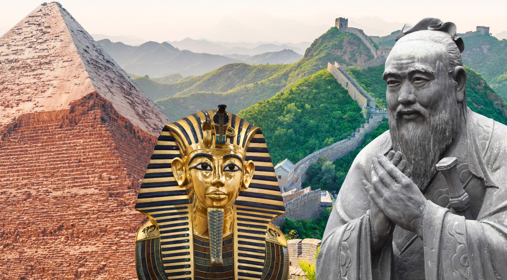

Theory Topics - World History
Explore historical events and significant periods that shaped the world.

- Ancient Civilizations
- The Middle Ages
- Renaissance and Reformation
- Age of Exploration
- Enlightenment
- Industrial Revolution
- World Wars
- Cold War Era
- Globalization
- Contemporary Issues
Lesson Description
Theory Note - Lesson 1: Ancient Civilizations
Lesson 1 delves into the fascinating world of ancient civilizations, exploring the following key aspects:
- Mesopotamia: The cradle of civilization, known for its advanced cities and early forms of writing.
- Ancient Egypt: The land of pharaohs, pyramids, and a rich cultural legacy.
- Indus Valley Civilization: An enigmatic civilization with advanced urban planning and sophisticated drainage systems.
- Chinese Dynasties: A glimpse into the dynastic cycles that shaped Chinese history.
- Greek City-States: The birthplace of democracy, philosophy, and the Olympic Games.
- Roman Empire: A powerful empire that left a lasting impact on law, architecture, and governance.
By the end of Lesson 1, you will gain insights into the origins of human civilization and the unique contributions of each ancient culture.
YouTube Video
Multiple Choice Questions (Test Your Knowledge)
| Topic | Description | Video |
|---|---|---|
| Ancient Civilizations | Exploring the Origins and Achievements of Early Cultures | Watch Video |
| The Middle Ages | Feudalism, Knights, and Cultural Transformations | Watch Video |
| Renaissance and Reformation | The Revival of Arts and Religious Transformations | Watch Video |
| Age of Exploration | Exploring New Horizons and Global Encounters | Watch Video |
| Enlightenment | Ideas, Philosophy, and the Age of Reason | Watch Video |
| Industrial Revolution | Technological Advancements and Societal Changes | Watch Video |
| World Wars | Causes, Impact, and Legacy of World War I and II | Watch Video |
| Cold War Era | Political Tensions, Space Race, and the Cold War Dynamics | Watch Video |
| Globalization | Interconnected World, Economics, and Cultural Exchange | Watch Video |
| Contemporary Issues | Challenges and Developments in the Modern World | Watch Video |